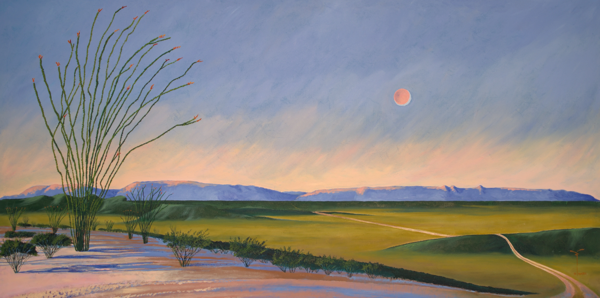

Horizontes opuestos propone una experiencia de contemplación donde el dibujo se convierte en origen, estructura y destino. En la obra de Antonio Tarín, la línea no es únicamente un recurso técnico, sino un principio de pensamiento: una forma de ordenar el espacio, de medir la distancia entre lo visible y lo imaginado, entre el instante y la permanencia. Cada composición parece surgir de un trazo contenido que, al desplegarse, da lugar a paisajes mentales donde la geometría delimita silenciosamente el mundo.
Los horizontes que atraviesan esta exposición no funcionan como promesas de llegada, sino como umbrales. Son límites que separan y, al mismo tiempo, conectan: el campo y la ciudad, lo natural y lo construido, la experiencia íntima y la memoria colectiva. Tarín articula estos territorios opuestos mediante estructuras geométricas que ordenan el espacio pictórico y establecen tensiones visuales sutiles, invitando al espectador a recorrer la obra con una mirada pausada, casi meditativa.
El tiempo ocupa un lugar central en estas imágenes. No se presenta como una secuencia narrativa, sino como una suspensión: un instante prolongado donde todo parece detenido, a punto de suceder o de desaparecer. Las figuras humanas, cuando aparecen, no dominan el paisaje; lo habitan con discreción, como testigos de un entorno que las sobrepasa. En ese gesto contenido se revela una reflexión profunda sobre la escala humana frente a la vastedad del territorio y del tiempo.
En Horizontes opuestos, la geometría no impone rigidez, sino que abre espacios de contemplación. Las formas, los planos y las líneas trazan rutas visuales que conducen hacia un infinito silencioso, donde el acto de mirar se transforma en una experiencia interior. La obra de Antonio Tarín nos invita a detenernos, a habitar el límite y a reconocer en ese punto de tensión la posibilidad de un diálogo entre opuestos: entre lo que somos y lo que permanece más allá de nosotros.
{kind=link}